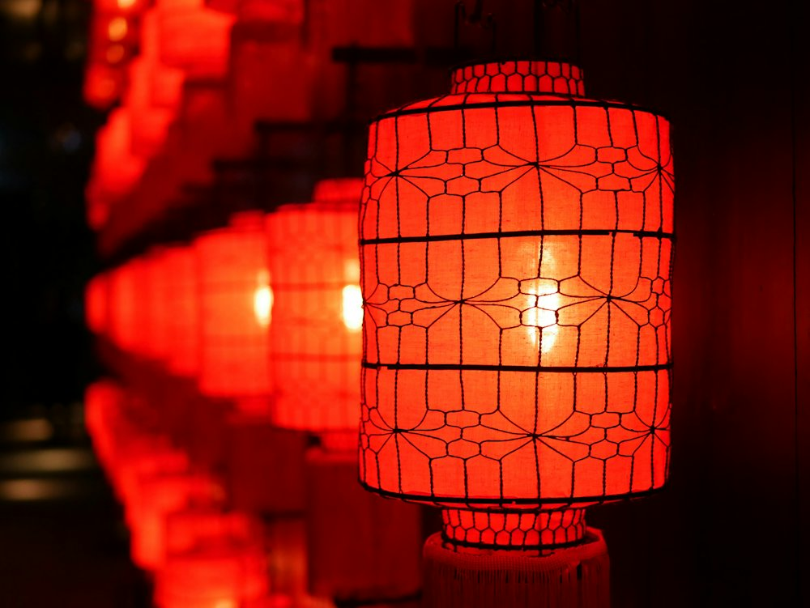

节庆历年规律西南
自贡国际恐龙灯会
Zigong Lantern Festival · 四川 · 自贡
最佳时间
春节前后至 3 月初（约 1 月中 – 3 月上旬）
历届多在春节前开灯、元宵后延续，具体以官方公告为准。
「天下第一灯」：自贡彩灯体量与工艺冠绝全国，超大灯组值得专程一趟。
不能错过
- 彩灯公园主灯组高可达数十米，航拍视角更震撼
- 传统丝扎灯、瓷器灯工艺展是内行看点
当地美食
自贡冷吃兔香辣有嚼劲的兔丁，看灯下酒标配
水煮牛肉自贡盐帮菜招牌，麻辣鲜烫
富顺豆花嫩豆花蘸糍粑海椒辣水，米饭杀手
火边子牛肉薄如纸的灯影牛肉，盐都百年手艺
旅人提醒
- 夜间开灯后观感最佳，注意防寒（湿冷）
- 春节假期人流量大，建议工作日夜间入场
月度热力与气温
10°
1
13°
2
18°
3
23°
4
27°
5
30°
6
32°
7
32°
8
27°
9
21°
10
16°
11
11°
12
适宜度（柱高，5=最佳）依据活动窗口与气候整理；气温为月均高温近似值（°C），仅供规划参考，出行前请查当地预报。
编辑核实笔记 · 整理自自贡市政府与灯会历年公告，非亲历；档期以官方发布为准。
预订 / 官网
官方页面：查看官网 / 官方信息 ↗ · 票价与预约以官网为准
联盟链接含占位 tracking id（Booking/Klook/Trip.com），上线替换为真实 ID 即生效；均带 utm 参数与点击统计。